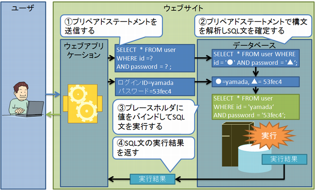

SQLインジェクションの解決法
ここでは演習で行った活動を通して、SQLインジェクションを防ぐための手立てについて学ぶとともに、実際の情報システムにおける修正法に関する解説を行います
実際のSQLインジェクションの解決法
SQLインジェクション全般の対策として、"プレースホルダ"によるSQL文の組み立てを行います。プレースホルダによるSQL文の組み立てとは、検索条件などのパラメータ部分を ？などの記号で示しておき、後から実際の値を機械的な処理で割り当てる方法です。ここで、パラメータ部分を示す記号 ？のことをプレースホルダと予備、そこへ実際の値を割り当てることを「バインドする」と呼びます。プレースホルダのことを「バインド変数」と呼ぶこともあります。
プレースホルダには次の2種類があります。
静的プレースホルダ
静的プレースホルダは、JIS/ISOの規格では「準備された文(Prepared Statement)」と規定されています。これは、プレースホルダのままのSQL文をデータベース側にあらかじめ送信して、実行前に、SQL文の構文解析などの準備をしておく方式です。SQL実行の段階で、実際のパラメータの値をデータベース側に送信し、データベース側がバインド処理します。
動的プレースホルダ
動的プレースホルダは、静的プレースホルダとは異なり、プレースホルダを利用するものの、値のバインド処理をデータベース側で行うのではなく、ウェブアプリケーション側のライブラリ内で実行する方式です。
参考情報
- 概要：Wikipedia SQLインジェクション
- IPA提供資料：SQLインジェクションに関する情報
まとめ
これであなたは、情報システムの内部での作用を通してSQLインジェクションの原理を学ぶことが出来ました。
ウェブシステムの脆弱性はこの他にも数多くあります。ここで学んだことを活かして学習を進めていきましょう。
アンケートのお願い
本システムは情報セキュリティに対する学習コンテンツの開発・研究の一環として開発されました。今後の修正、発展のためにもアンケートのご協力おねがいします。